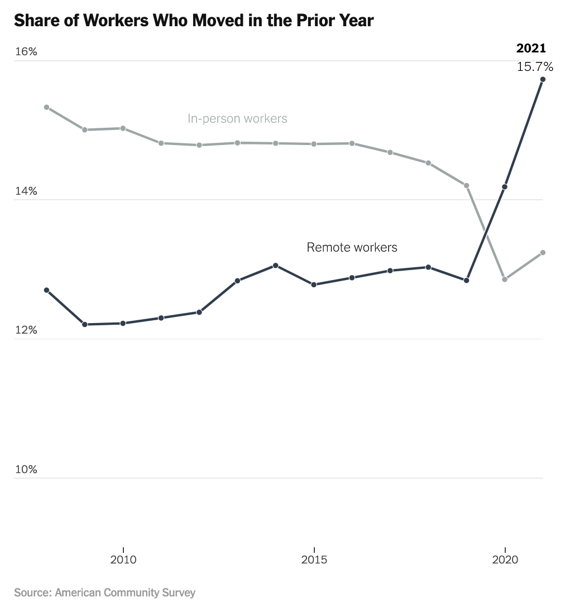
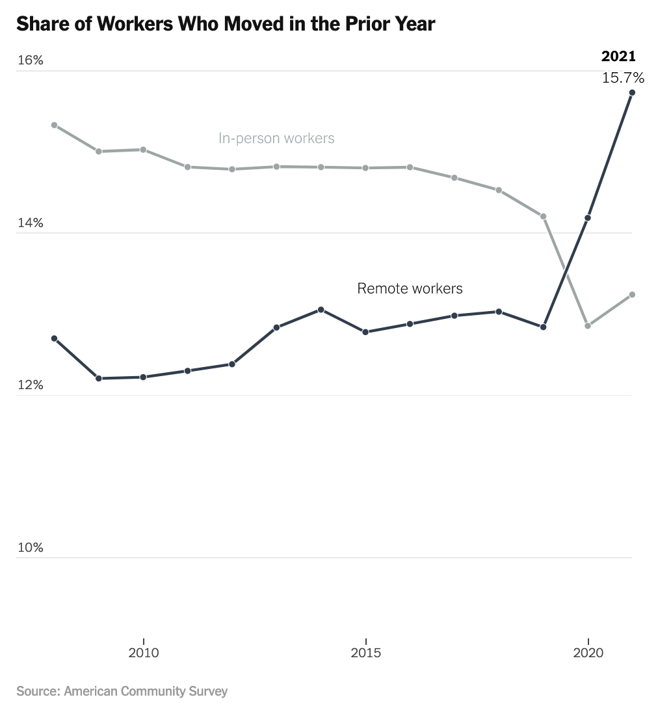

About Me
-
I'm a data curator-analyst-designer-developer-reporter.
-
I'm a 2023-24 New York Times fellow in the Upshot section.
-
I have a master's degree in Digital Mapping and a bachelor's degree in Creative Writing.
-
I do research and fact checking for Flashback, a New York Times weekly history game.
-
I used to work for the UK Human Development Institute, a disability research and advocacy organization, specializing in accessible written and visual communications.
-
In 2022, I was a McClatchy data fellow. I created data visualizations for various newspapers including the Miami Herald.
-
I was born and raised in the Lexington, Kentucky area.
Portfolio
Back to top 



Coursework and Technical Skills
Relevant Coursework & Certificates
- Collaborative Geovisualization
- Creative Non-Fiction
- Design for Interactive Web Mapping
- History of Critical Cartography
- Introduction to Genomic Technologies (Johns Hopkins via Coursera)
- Introduction to New Mapping
- Programming for Web Mapping
- Python for Genomic Data Science (Johns Hopkins via Coursera)
- Social Impacts of New Mapping
- Spatial Data Analysis and Visualization
- Writing for Media
Technical Skills
- Adobe Illustrator
- Datawrapper (including API)
- d3.js
- HTML/CSS
- Git and Github
- Google App Scripts
- Google Sheets
- JavaScript
- Leaflet.js
- Mapbox GL JS
- Mapshaper
- Microsoft Excel
- PostGIS/SQL
- Python
- geopandas
- Jupyter notebook
- matplotlib
- pandas
- QGIS
- Svelte
- Turf.js
My Data Design Philosophy
The following statements represent the principles that guide my work.
Because I am (and will
always be) learning, growing, experimenting and collaborating, not all of my work reflects each
statement. My goal is that each of my projects will be better than its predecessors in its
alignment
with the following statements:
-
Accessibility is non-negotiable and must be priotized at every step of the process. It is ineffective as an afterthought.
-
Structured data is cunning; it is never without bias. Data interrogation is the first step of analysis.
-
A chart's colors, typography, layout and text are as convincing as its numbers.
-
Data visualization is a rhetorical device. Its methodology should be transparent its processes reproducible.
-
A good cartographer is an honest liar. (No two-dimensional map has ever told the whole truth. A mapmaker should choose which lie(s) to tell with careful consideration.)
-
Sometimes you need a map. Most of the time, you don't.
The ever-exploited digital map deserves, at least, a thought experiment: What other forms could the map take? A bar chart? A searchable table?
Maps, as related to data visualization, work well for:
-
assessing geospatial patterns and identifying outlier locations
-
locating an unknown place being described or reported from (e.g. where is the tiny island the reporter identified as hotspot for offshore fraud?)
-
assessing movement across space (e.g. diasporas, the paths of hurricanes, the migration of a species over time)
-
retracing steps, either as a means of:
-
offering detail and perspective on a series of chronological events over the course of a short period of time, or
-
corroborating timelines with distance and assessing feasibility to corroborate an alleged series of events.
-
In other words, how did it really go down?
-
-
Assume your reader is has had a long day and is so very tired. Why make them work for information? Clarify, in text, what is visually interesting, and spell out the takeaways.
-
Imagine your most adversial reader — one who it may feel wants to misunderstand the topic. Anticipate their misconceptions, edit the design to address them and repeat.
-
Clarity and accessibility win out over aesthetics.
-
Visual information is not one-size-fits-all. Be mindful of neurodiversity and cognitive processing differences and varied levels of data literacy. When possible, offer multiple options for data exploration (e.g. a scatter plot and a table and a search box).